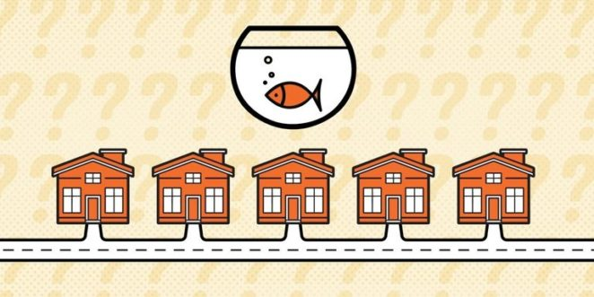

Kto hoduje rybki?

5 mężczyzn różnej narodowości mieszka w 5 domach o różnych kolorach. Każdy z nich pali i pije napoje różnej
marki. Każdy lokator również
hoduje inny rodzaj zwierząt. Domy są ustawione w linii prostej (1-2-3-4-5).
Poniżej znajduje się lista 15 faktów, które pomogą określić właściciela rybek:
- Norweg zamieszkuje pierwszy dom.
- Anglik mieszka w czerwonym domu.
- Zielony dom znajduje się bezpośrednio po lewej stronie domu białego.
- Duńczyk pija herbatkę.
- Palacz papierosów light mieszka obok hodowcy kotów.
- Mieszkaniec żółtego domu pali cygara.
- Niemiec pali fajkę.
- Mieszkaniec środkowego domu pija mleko.
- Palacz papierosów light ma sąsiada, który pija wodę.
- Palacz papierosów bez filtra hoduje ptaki.
- Szwed hoduje psy.
- Norweg mieszka obok niebieskiego domu.
- Hodowca koni mieszka obok żółtego domu.
- Palacz mentolowych pija piwo.
- W zielonym domu pija się kawę.
Krzysztof Żabicki Projekt Aplikacje ©